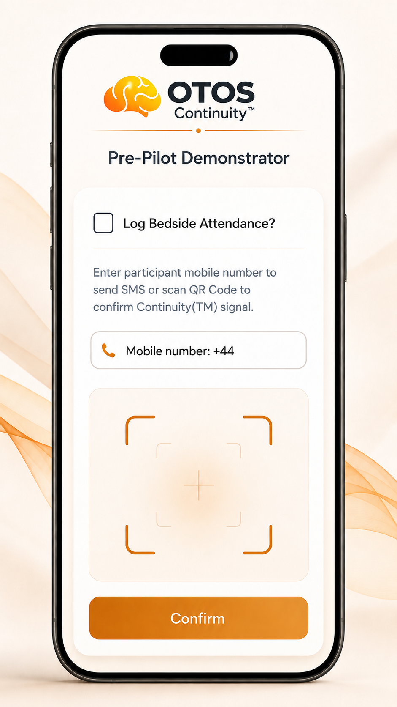

“That was the moment. I was on my way Out The Other Side™”
It wasnn't a passing comment, it was a promise. This page is me keeping it.
The bedside gap
You can see the crisis. You should not be left with nowhere to send it.
I had documented, combined presentation of ADHD. I had addiction crisis. I had repeated emergency contact, I had hospital admissionsfrom withdrawals, seizures and Intensive CareUni admissionn, twice after an assualt and a delirium teremen fulled jump for a 1st floor balacony. The system kept seeing the fires and always missed the accelerant underneath them all.
The Alcohol Care Team sits at one of the most important points in that pathway: the moment when somebody is in crisis presentation at A&E. Withdrawing, seazing but alive, visible, scared enough to listen and close enough to being lost again, the minute they are discharged
OTOS is not asking Alcohol Care to diagnose ADHD or carry the next service’s risk. It is asking whether that bedside moment, that I experienced first-hand, can create a Continuity touchpoint: a simple record that the person was seen, the next step is immediately visible, tokenised, annoymous and secure - the handoff did not vanish into silence.

Illustrative bedside handoff concept. Not live. Not an NHS product.
What I imagine testing
A light touchpoint. A visible next step. A receipt that it landed.
A person from the 50-person cohort is seen by Alcohol Care. The agreed OTOS touchpoint is logged.
Continuity is logged and their thread upodated. Other Partners see the thread livve and can act, each under their own remit. The combined power of all services contriubuting a tiny element at this point makes all the difference. Partners and agreed pathways simply act on the infortmation, support the patient, chase up decisions, normal working day but with a tiny upstream act that could save a life, downstream. No new clinical responsibility moves to OTOS.
The demonstrator can see whether the next step landed, stalled or disappeared. That is the proof we are trying to gather.
What I am asking
Not a rollout. Not paperwork. A 30-minute conversation to pressure-test the bedside route.
If this can be done without disruption, without extra clinical burden and without confusing responsibility, it could become one of the most valuable touchpoints in the whole demonstrator. If it cannot, we agree honestly and stop there.